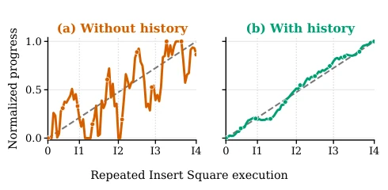
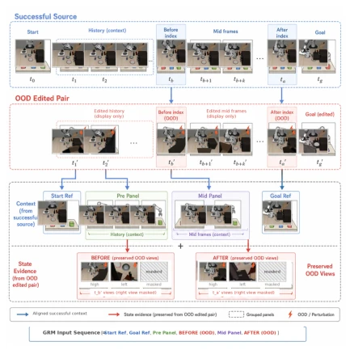
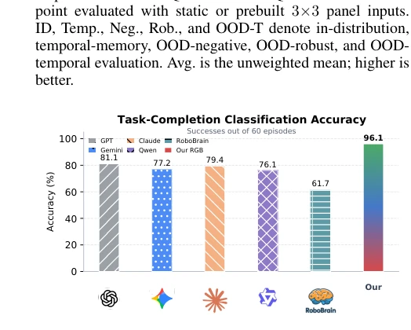
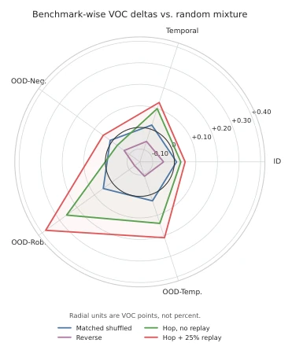
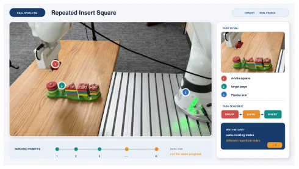
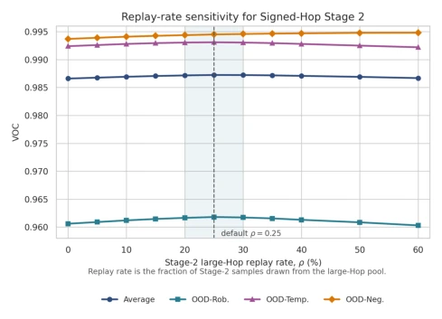
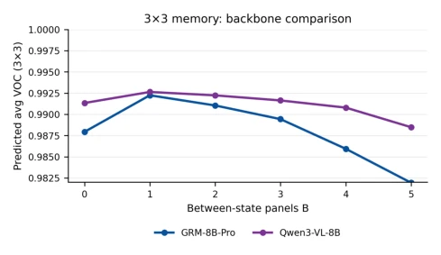
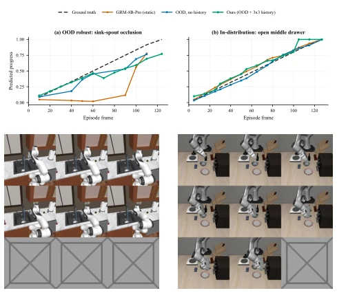

This Robo-Dopamine 2.0 attempts to inject some "dopamine" (reward signals) into VLA policies to address error accumulation and out-of-distribution (OOD) issues in long-horizon operations. The authors cleverly introduce historical context and a symbolic progress space, unifying "success," "robustness," and "failure" within a single framework, thereby avoiding the temporal ambiguity of traditional static before-and-after comparisons. However, although this pairwise prediction interface is flexible, the computational overhead is certainly significant, as each inference requires assembling historical panels, which may affect real-time performance. Although real-world experiments achieved a 71/80 insertion success rate, compared to the improvement magnitude in simulation, it still carries a hint of the "simulation is justice" sentiment, and generalization to more complex scenarios still needs verification. Overall, it is a solid RL reward modeling work, but do not expect it to solve all generalization problems single-handedly, after all, reward models are just auxiliary to policy optimization.
研究动机Motivation
VLA 模型虽然提升了泛化能力（Brohan et al. 2023; Zitkovich et al. 2023），但在长程接触操作中仍易受误差累积和场景变化影响。现有强化学习依赖稀疏奖励导致探索低效，手工密集奖励又脆弱且任务特定。视觉奖励模型虽能提供密集反馈，但多依赖静态前后观察，难以捕捉执行上下文和失败语义（Ni, Eysenbach, and Salakhutdinov 2022; Guhur et al. 2023）。这导致时序模糊，无法区分鲁棒性变化与任务失败。Robo-Dopamine 2.0 旨在解决这些挑战，通过历史条件和 OOD 感知提升进度估计的准确性，为 VLA 策略的 RL 微调提供可靠信号。
Although VLA models have improved generalization capabilities (Brohan et al. 2023; Zitkovich et al. 2023), they remain susceptible to error accumulation and scene changes in long-horizon contact operations. Existing reinforcement learning relying on sparse rewards leads to inefficient exploration, while hand-crafted dense rewards are fragile and task-specific. Although visual reward models can provide dense feedback, they mostly rely on static before-and-after observations, making it difficult to capture execution context and failure semantics (Ni, Eysenbach, and Salakhutdinov 2022; Guhur et al. 2023). This leads to temporal ambiguity, making it impossible to distinguish robustness changes from task failures. Robo-Dopamine 2.0 aims to address these challenges by improving progress estimation accuracy through historical conditions and OOD awareness, providing reliable signals for RL fine-tuning of VLA policies.

Figure 6: Logged progress predictions from matched static and rollout-history-conditioned executions of repeated Insert Square. Tick Ik, k ∈{1, . . . , 4}, denotes the k-th insertion attempt, and the gray dashed line denotes execution order. Static predictions exhibit non-monotonic jumps at recurring states, whereas rollout-history conditioning produces more order-consistent estimates.
方法Method
整体流程包含数据构建、训练和闭环推理。首先构建结构化 OOD 数据，对成功轨迹进行负向或鲁棒性编辑，确保编辑仅影响查询端点而参考面板保持源对齐。核心是历史条件成对奖励公式，标准查询用同 episode 专家历史，OOD 查询用对齐的成功参考面板，在线查询用观测 rollout 历史，所有输入共享 GRM 接口。提出 OOD 感知符号进度空间，将状态分为正、鲁棒、负分支，用符号区分有效执行与任务无效失败，负值代表失败深度。训练采用 Signed-Hop Curriculum，先学全局几何（大 Hop 对），再微调局部校准（小 Hop 对），并回放 25% 大 Hop 样本以保留几何结构。闭环推理时，融合前向、后向和增量预测的潜在值，生成奖励信号用于 RL 优化，确保奖励对语义变化不敏感但对任务失败敏感。
The overall process includes data construction, training, and closed-loop inference. First, structured OOD data is constructed by performing negative or robustness edits on success trajectories, ensuring edits only affect the query endpoint while the reference panel remains source-aligned. The core is the historical conditional pairwise reward formula, where standard queries use same-episode expert history, OOD queries use aligned success reference panels, online queries use observed rollout history, and all inputs share the GRM interface. An OOD-aware symbolic progress space is proposed, dividing states into positive, robust, and negative branches, using signs to distinguish valid execution from task-invalid failures, where negative values represent failure depth. Training employs a Signed-Hop Curriculum, first learning global geometry (large Hop pairs), then fine-tuning local calibration (small Hop pairs), and replaying 25% of large Hop samples to preserve geometric structure. During closed-loop inference, latent values from forward, backward, and incremental predictions are fused to generate reward signals for RL optimization, ensuring rewards are insensitive to semantic changes but sensitive to task failures.

Figure 5: OOD provenance case study. All task-reference and temporal-context images are drawn from the aligned successful source episode, while only the queried before– after views contain the OOD edits.
Visual Order Consistency (VOC) is evaluated on five benchmark families, including in-distribution, temporal, OOD negative, OOD robust, and OOD temporal. GRM-8B-Pro and Qwen3-VL-8B are used as backbones. Results show that after adding historical panels, average VOC increased from 0.967 to 0.986, and OOD robust VOC increased from 0.906 to 0.958. In RoboTwin simulation, the full model achieved an 86.8% success rate, outperforming the sparse reward baseline. In the real-world dual Franka insertion task, 71/80 successful insertions were achieved. Ablation studies indicate that temporal context and OOD supervision contribute significantly, and Signed-Hop curriculum learning outperforms random mixing. Particularly, the replay strategy retained large Hop samples in Stage 2, further improving VOC performance.

Figure 2: Task-completion classification accuracy on 60 episodes. We compare GPT-5.5, Gemini-3-Pro, Claude- Opus-4.8, Qwen3.5-397B-A17B-fp8, RoboBrain 2.0, and Robo-Dopamine 2.0-8B. This discrete label metric is dis- tinct from VOC.

Figure 3: Per-family VOC gains of Signed-Hop over its matched-pool shuffled control. Replay sensitivity is provided in the supplementary material.

Figure 4: Dual-Franka repeated Insert Square setup with ConRFT. The numbered callouts identify the four-hole square, target pegs, and acting arm. Each trial has K = 4 attempts, creating visually similar states at different cumula- tive progress.

Figure 7: Sensitivity to the fraction ρ of Stage 2 samples replayed from the large-Hop pool. The shaded neighborhood marks the moderate-replay regime around the selected ρ = 0.25 setting.

Figure 9: 3×3 memory-panel sweep over between-state panel count. Both backbones peak with one or two between- state panels; additional panels do not monotonically improve VOC.

Figure 8: Episode-level progress traces on two held-out cases. Top: progress curves for a RoboCasa sink-spout episode with foreground occlusionandanin-distributionLIBEROmiddle- drawer episode. Bottom left: the source-reference pre-query panel for the sink-spout case. Bottom right: the same-episode pre-query panel for the drawer case. Gray cells denote fixed padding.